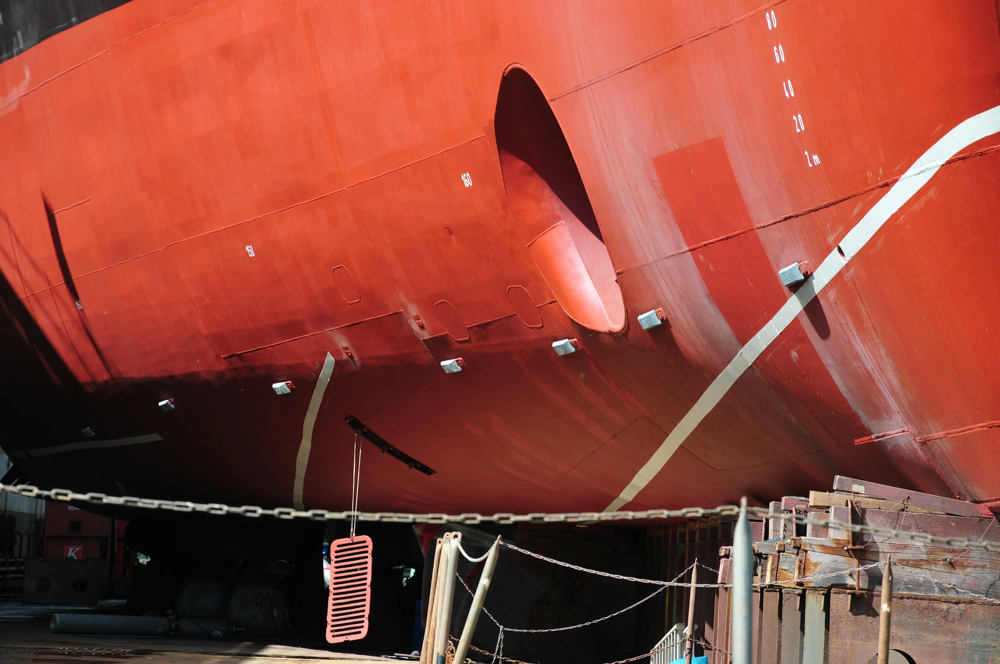

ByEirini Diamantara&Dimitris Roumeliotis
Greek owners account for more than one in five newbuilding orders placed in 2026 across bulk carriers, tankers, containerships and gas carriers, with 455 contracts out of 2,200 worldwide. Their participation in this year’s contracting exceeds their share of the outstanding orderbook across the three main conventional sectors. Greeks represent 16.4% of new bulker orders against 11.3% of the global bulker orderbook, 30.7% against 27.0% in tankers, and 14.5% against 12.6% in containers. These figures underline the substantial Greek contribution to the next generation of shipping capacity.
Almost half of the Greek dry bulk orderbook reflects contracts placed this year. The 100 vessels ordered in 2026 are equivalent to 48.3% of the 207 ships outstanding, compared with 33.3% globally. The preference for larger tonnage is pronounced. Capesizes and Newcastlemaxes account for 45% of Greek bulker contracts, against 24% worldwide. Furthermore, 22 of the 25 Newcastlemaxes on the Greek orderbook were contracted this year, while Greek owners placed 23 of the 32 Capesize orders recorded globally. This concentration gives Greek investment decisions particular significance for future competition in the larger sizes.
The supply implications vary considerably within dry bulk. The global orderbook has reached 15.7% of fleet dwt, from 10.7% a year earlier. However, the combined Cape/VLOC orderbook by vessel count is equivalent to 282% of the fleet aged 21 years and above, compared with 62% for Handysizes. Larger bulkers consequently have greater potential for fleet expansion beyond replacement of the oldest ships. Handysize supply commitments remain more restrained, although Greek participation in this year’s ordering is limited to one vessel out of 73 worldwide.
Tankers attracted 211 Greek contracts, accounting for 46% of Greek ordering across the four sectors and equivalent to 46.1% of the outstanding Greek tanker orderbook. VLCCs and Suezmaxes dominate with 68 and 50 orders respectively, together representing 56% of Greek tanker contracts. Greeks account for approximately half of worldwide Suezmax ordering and 39% of VLCC/ULCC contracting this year. Their investment therefore carries substantial exposure to the future balance of large crude tanker markets.
Fleet ageing provides a basis for tanker renewal, with approximately 48% of vessels aged 16 years or above. Meanwhile, the global orderbook has increased to 26.1% of fleet dwt, from 15.3% a year earlier. Delivery schedules place much of this capacity further ahead. Approximately 76% of VLCC/ULCC and 73% of Suezmax ordered dwt is scheduled for 2028 onwards. The commercial effect will depend partly on how much older capacity leaves service before these deliveries arrive.
Containerships present another distinct replacement profile. Greek owners placed 99 orders this year, equivalent to 39.9% of their outstanding programme, concentrating on Feeders, Handies and Panamaxes. Globally, the orderbook stands at 44.5% of fleet TEU capacity, up from 32% a year earlier. Yet the 642 Feeders on order represent only 54% of the 1,184 existing vessels aged 21 or above. This provides considerable potential for replacement within a sector facing substantial overall capacity additions.
Gas investment adds further exposure to expanding delivery pipelines, with 45 Greek contracts, including 25 VLGCs and 16 LNG carriers of 141,000–200,000 cbm. The global VLGC orderbook already represents 48.3% of fleet capacity, while LNG stands at 36.5%. Across these investment programmes, earnings will influence both owners’ willingness to retire older vessels and the market’s ability to absorb deliveries.
Data source:Xclusiv Shipbrokers Inc.